In the previous article, we used xT (Expected Threat) to examine who moved the ball into more dangerous positions. By showing how much passes and carries increased attacking threat, xT offered a useful way to understand the process before goals and assists.
But not all value in football comes from moving the ball forward. A progressive pass can fail and lead to an opposition counterattack; conversely, a centre-back's interception or a safe pass through pressure can sharply reduce the risk of conceding. xT mainly captures how successful passes and carries change the threat of the ball's location, but many important actions lie outside that scope.
VAEP (Valuing Actions by Estimating Probabilities) was developed from this problem.
VAEP is an action-value framework proposed by the research group of Professor Jesse Davis at KU Leuven. The researchers introduced a common scale for evaluating passes, carries and shots, as well as tackles and interceptions, through changes in scoring and conceding probabilities before and after each action.
(Right) Hudl StatsBomb's video explaining OBV.Source: Hudl StatsBomb
Probability-based action valuation has since become an important methodology in football analytics. Alongside VAEP, similar models such as Hudl StatsBomb's OBV (On-Ball Value) are now used in player evaluation, scouting and match analysis.
So what does the 2025 K League look like through VAEP?
Lee Dong-Gyeong recorded 13 goals and 12 assists. We do not need a new metric to recognise that he was one of the league's most influential attacking players.
Other contributions, however, are harder to see through goals and assists alone. The K League has also begun to use VAEP to fill this gap. The 2025 K League Technical Report introduced VAEP as a key analytical metric, comparing teams' attacking and defensive contributions as well as action values created in Zones 14 and 17.
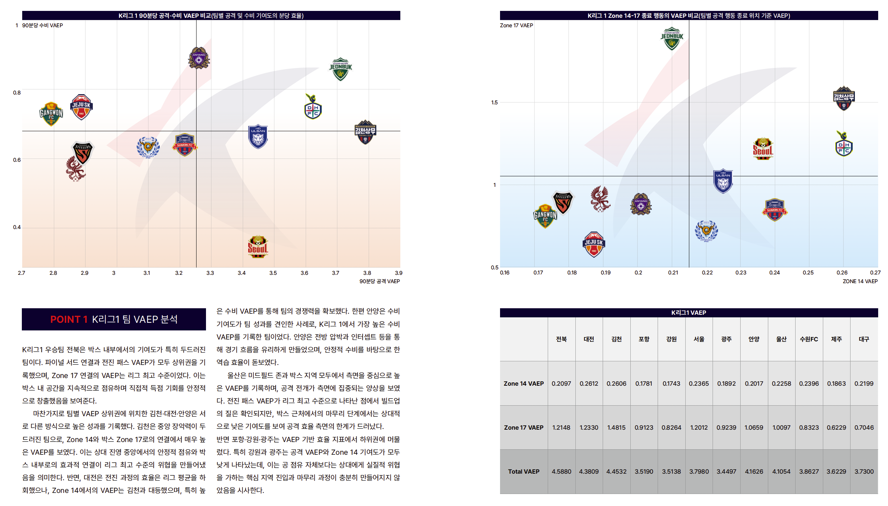
This article goes one step further, moving from teams to individual players and actions. Which actions, and whose, created value that goals and assists could not fully explain? We begin with how VAEP assigns value to an action.
1. What Is VAEP?
Where xT evaluates changes in threat primarily through the ball's start and end locations, VAEP evaluates how much the game state changed based on the broader context of an action, including its location.
Even two passes toward the same location can produce different scoring and conceding probabilities depending on whether they were completed, the preceding play and the match situation. VAEP accounts for these differences and places passes, carries and shots on the same scale as turnovers, tackles, interceptions and clearances.
The core idea is simple: compare the probabilities of scoring and conceding before and after an action.
+ [P(concede | before action) − P(concede | after action)]
If a team's scoring probability rises after an action, the action creates offensive value. If its probability of conceding falls, it creates defensive value. The sum of the two is that action's VAEP.
For example, when a defensive midfielder plays forward through pressure and raises the probability of scoring on the next attack, the pass earns positive VAEP even without an assist. The same applies when a centre-back stops a dangerous progression and lowers the risk of conceding. Conversely, losing the ball in one's own half and increasing the opponent's chance of scoring receives a negative value.
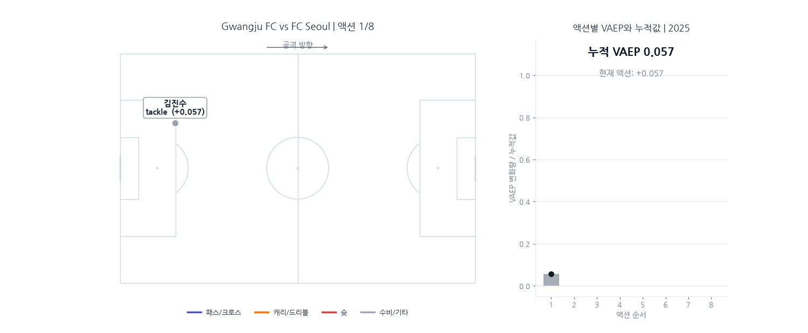
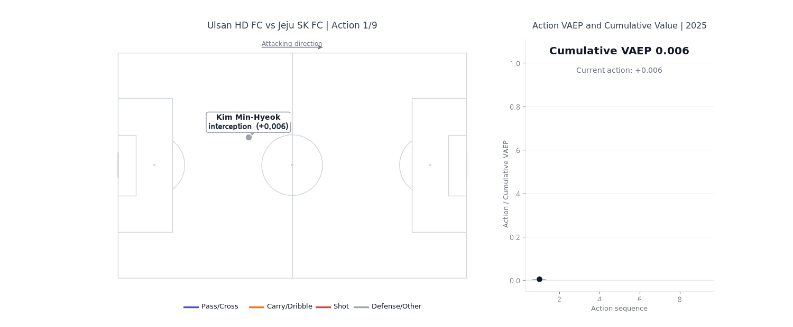
Reading VAEP action by action and in sequence reveals whether the final shot created most of the value, or whether a recovery, pass or carry built that value step by step beforehand.
So while xT primarily asks, “How much more threatening a location did the ball move into?”, VAEP goes one step further: “In that context, how much did this action improve the team's chances of scoring and avoiding conceding?”
2. Different Ways Teams Accumulated Value
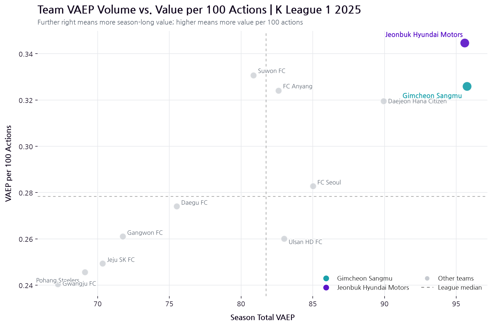
The chart's x-axis represents the total VAEP accumulated across the season—the volume of value created. The y-axis shows VAEP per 100 on-ball actions, a measure of value density that accounts for action volume. Teams further right accumulated more value over the full season, while teams higher up changed scoring and conceding probabilities more with the same number of actions.
On this basis, Gimcheon Sangmu recorded the highest cumulative VAEP in the 2025 K League 1. Gimcheon finished at 95.76, narrowly ahead of Jeonbuk Hyundai Motors at 95.58.
Although Gimcheon and Jeonbuk were nearly identical in total VAEP, Jeonbuk led 0.35 to 0.33 in VAEP per 100 actions. Gimcheon accumulated value through a greater number of actions, whereas Jeonbuk produced a similar total through relatively fewer actions. Daejeon and FC Anyang also ranked highly in value per action, while FC Seoul and Ulsan tended to accumulate value through longer sequences. Because VAEP per action is influenced by playing style, including possession patterns and shot frequency, it is better interpreted as a difference in how teams accumulated value than as an absolute efficiency ranking.
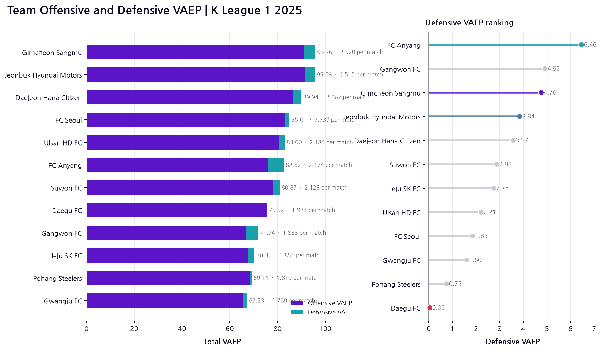
Volume and value density alone do not tell us whether that value came from attack or defence. VAEP can decompose each action's value into offensive value, which raises the probability of scoring, and defensive value, which lowers the probability of conceding. Because the model estimates near-future scoring and conceding probabilities from the perspective of the team in possession, goals and shots tend to create direct and relatively large offensive values. Defensive value is more distributed across actions, while off-ball defending is not included, so a smaller value does not mean that defence is less important.
Breaking the totals down makes the difference between Gimcheon and Jeonbuk clearer. Jeonbuk's offensive VAEP of 91.74 exceeded Gimcheon's 90.99, but Gimcheon led 4.76 to 3.84 in defensive VAEP. Jeonbuk created slightly more value through actions that increased scoring probability; Gimcheon added more value by reducing the risk of conceding and narrowly finished first overall.
FC Anyang's defensive VAEP of 6.46 was the highest in the league. Their total attacking value remained some distance from the top teams, but their recorded actions accumulated the most value in the direction of lowering the risk of conceding.
Daegu, by contrast, recorded 75.47 in offensive VAEP but only 0.05 in defensive VAEP. Our previous xT analysis showed that Daegu moved the ball into dangerous areas without turning that progression into enough high-quality chances. VAEP adds another layer: after danger passed to the opponent, Daegu also failed to create sufficient net value in reducing it again.
Teams with similar total VAEP therefore did not necessarily create their value in the same way. Gimcheon and Jeonbuk were almost level in volume but differed in composition; Anyang stood out for defensive value, and Jeonbuk for value per action. VAEP shows not only a ranking, but how each team shifted the game state in its favour.
3. The Players Goals and Assists Could Not Fully Explain
A team's VAEP ultimately comes from the actions performed by its players. So how similar were player evaluations based on goals and assists to those based on VAEP?
The chart below shows the relationship between goal contributions and total VAEP for outfield players who recorded at least 500 actions. Further right means more goals and assists; higher up means more VAEP accumulated over the season.
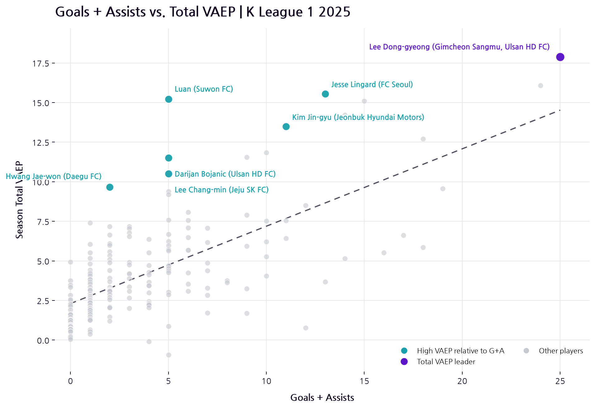
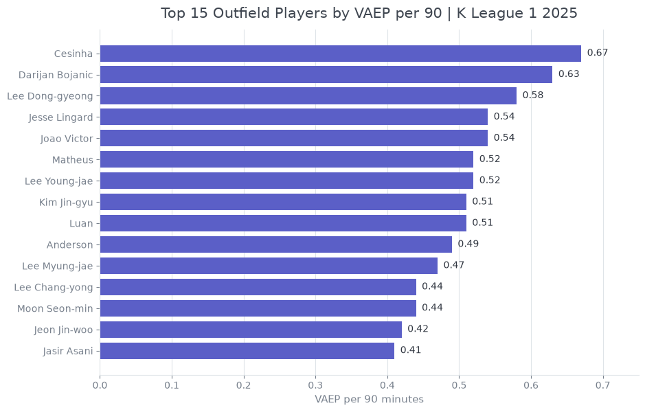
Lee Dong-Gyeong occupied the highest position on both measures, with 25 goal contributions and a total VAEP of 17.89.
Not every player, however, sat close to the trend line. Players above it accumulated more VAEP than others with a similar number of goals and assists.
Luan stands out most clearly. Despite recording only five goals and no assists, he posted a total VAEP of 15.22, among the highest in the league. Lingard and Kim Jin-Gyu also produced high VAEP relative to their goal contributions, while Hwang Jae-Won, Bojanic and Lee Chang-Min sat above the trend line as well. Their actions often shifted the game state in their team's favour even when they were not recorded as goals or final passes.
After adjusting for playing time, Cesinha ranked first in VAEP per 90, followed by Bojanic at 0.63. Lee Dong-Gyeong, first in total VAEP, ranked third, while Luan remained near the top at 0.51. Their high totals were therefore not simply a product of playing more minutes.
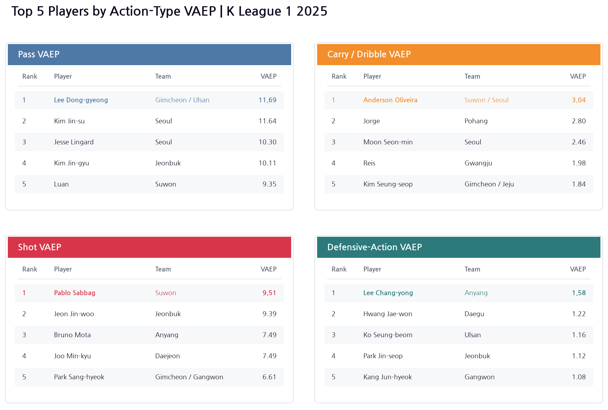
Splitting the results by action type makes the differences in how players created value clearer. Lee Dong-Gyeong led pass VAEP at 11.69, narrowly ahead of Kim Jin-Su at 11.64. Luan ranked fifth at 9.35, showing that his high total VAEP came not only from shooting but also from his contribution to build-up.
Anderson led in carry and dribble VAEP, while Sabak ranked first for shooting. Lee Chang-Yong, meanwhile, topped defensive-action VAEP at 1.58. His contribution through tackles, interceptions and similar actions was difficult to see from his two goals and no assists alone.
These values are cumulative season totals, not per-action averages. Numbers from actions with very different frequencies, such as passes and shots, should therefore not be compared directly. The useful comparison is within each action type: Lee Dong-Gyeong through passing, Anderson through ball carrying, Sabak through shooting and Lee Chang-Yong through defensive actions created value in different ways.
4. Similar Action Value, Different Spaces
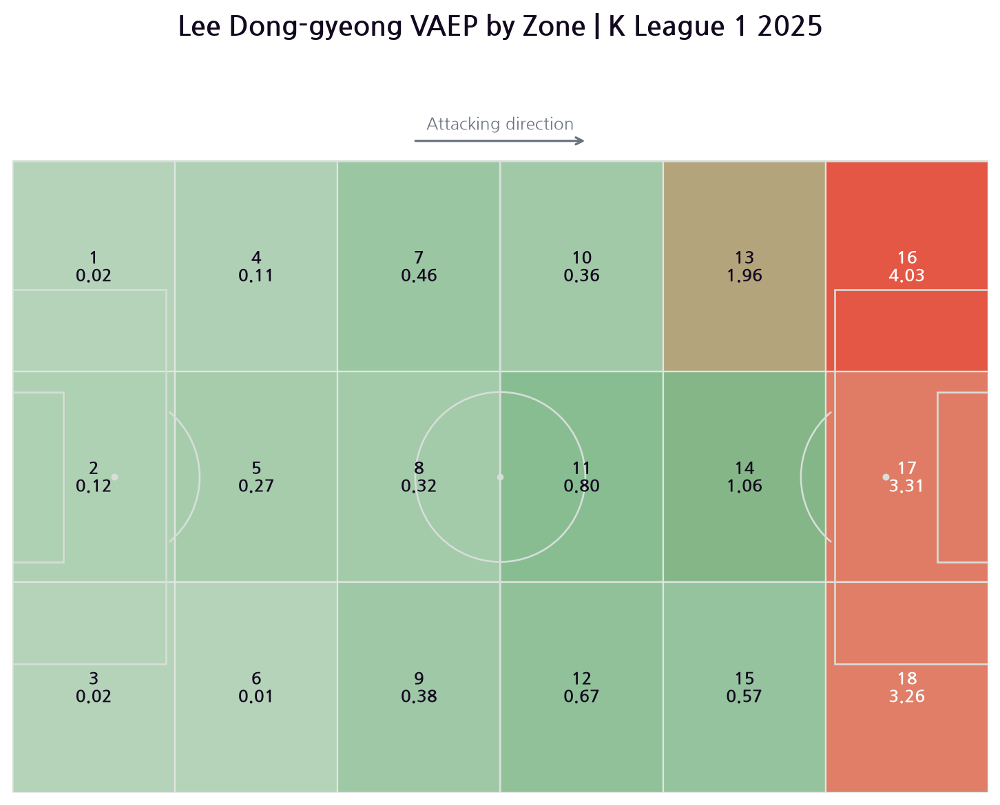
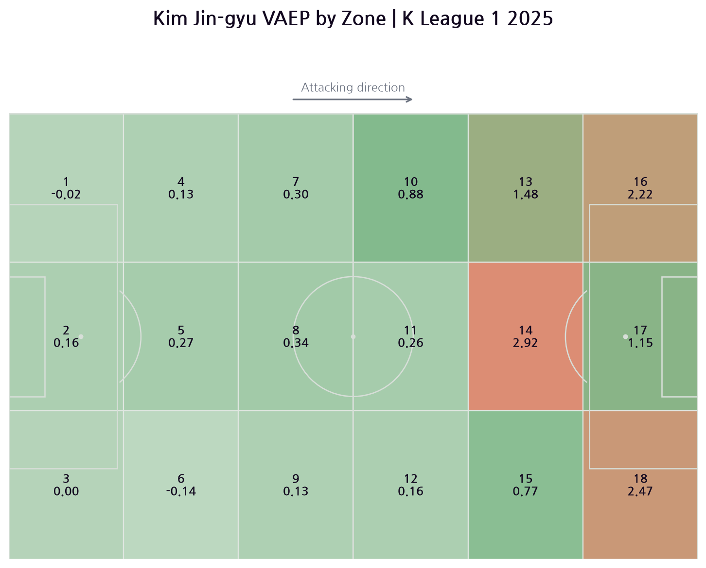
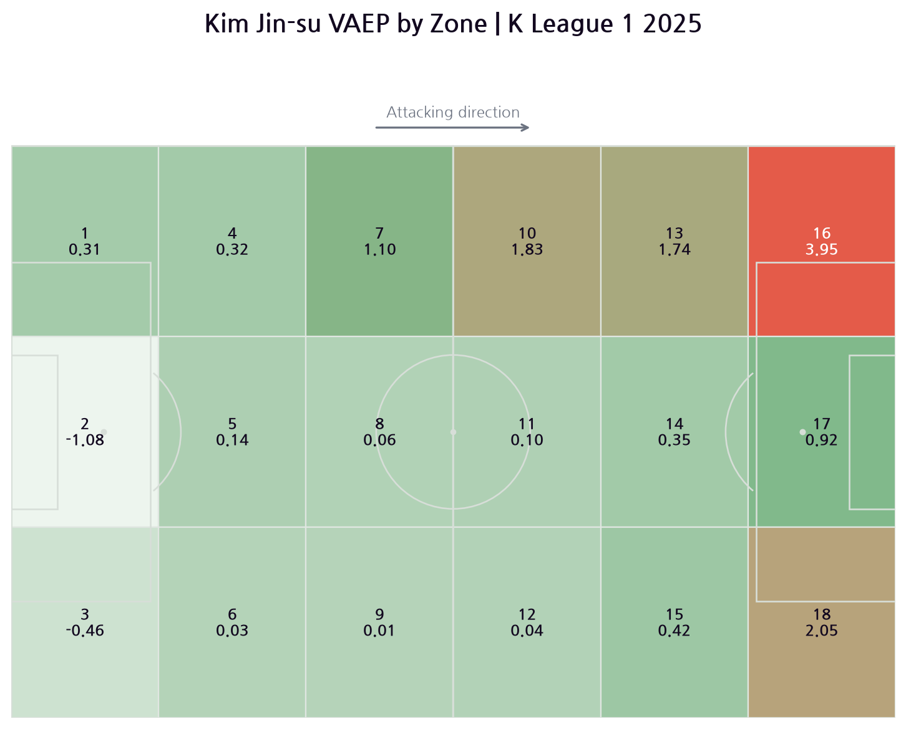
Lee Dong-Gyeong's value was concentrated close to the opponent's goal. He recorded 4.03, 3.31 and 3.26 VAEP in Zones 16, 17 and 18—the two sides and centre of the opposition penalty area. Those three zones alone accounted for 10.60, more than half of his season total. Rather than remaining on one flank, Lee directly increased scoring probability across the opposition penalty area.
Kim Jin-Gyu recorded his highest value, 2.92, in Zone 14—the central area immediately outside the opposition penalty box. He also created 2.22 and 2.47 in Zones 16 and 18, the two sides of the penalty area. Unlike Lee Dong-Gyeong, however, his highest value appeared centrally outside the box rather than inside it, reflecting a role in choosing the final pass and directing the next phase of attack rather than finishing moves himself.
Kim Jin-Su showed a clear line of value along one flank. His VAEP rose progressively across Zones 7, 10, 13 and 16 on the left side, peaking at 3.95 in Zone 16, deep in the opposition half. Creating far more value on the flank than in central Zone 14 reflects the full-back's role in linking attacks through progressive passes and crosses rather than entering the box directly.
All three players recorded high pass VAEP, but they created it in different spaces. Lee Dong-Gyeong did so across areas close to the opponent's goal, Kim Jin-Gyu from the centre outside the box, and Kim Jin-Su by progressing along the flank.
Because these are cumulative values by zone, they are also affected by how many actions a player recorded in each area. A darker zone should not automatically be read as the space where each individual action was most efficient. Instead, the maps are spatial profiles showing where a player repeatedly accumulated value over the season.
Conclusion: Good Players Are Not Found Only in the Final Action
Gimcheon accumulated the most VAEP in the 2025 K League 1, while Lee Dong-Gyeong recorded the highest player total. His result aligned with the 13 goals and 12 assists visible in conventional attacking statistics.
VAEP's value, however, is not limited to confirming a familiar number one. It also brings forward players who are difficult to explain through traditional records alone: Luan, whose value remained high despite five goals and no assists; Bojanic, who stood out in VAEP per 90; and Lee Chang-Yong, who led the league in value from defensive actions.
VAEP does not explain everything. It cannot evaluate unrecorded pressing, positioning or off-ball movement that creates space, and cumulative values are influenced by minutes played and action volume. VAEP should therefore be used not as a final score that reduces a player to one number, but as a tool for finding contributions that disappear between goals and assists.
For questions about the analysis or collaboration, write to thedatadribblers@gmail.com.
Code implementation Miru Hong
Writing Minho Lee, Sunjae Kweon
Review Minho Lee